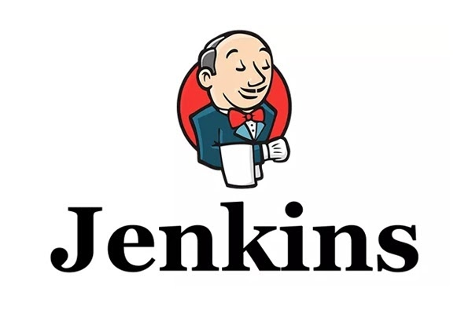

概念
话说不会偷懒的程序员不是好的程序员，笔者就时常如果有一个软件能够帮我把日常的体力工作都给干了，这样就可以有时间做更多的脑力工作了。
逛博客的时候，经常看到DevOps和CI/CD的相关文章，抱着试试看的想法研究下如何实现。当然跟很多初次看到这几个单词都一脸懵的朋友一样，肯定搜索下都是什么意思:
DevOps: DevOps是Development和Operations的组合，是一种重视软件开发人员（Dev）和运维人员（Ops）之间沟通合作的文化，运动和惯例，用于促进应用开发、应用运维和质量保障（QA）部门之间的沟通、协作与整合。以期打破传统开发和运营之间的壁垒和鸿沟。 通过自动化软件交付和架构变更的流程，使构建，测试，发布软件能够更快，频繁和可信。
CI: 持续集成（Continuous Integration，简称 CI），开发人员各自编写自己负责部分的代码，然后上传到源代码库中合并，CI服务器负责构建软件并测试是否能正常运行，将测试结果反馈给开发人员。
CD: 持续交付（Continuous Delivery，简称 CD）和持续部署(Continuous Deployment)，是在持续集成的基础上将集成后的代码部署到更贴近真实运行的环境中去进行进一步的测试，并可以在多种不同的配置上测试代码，运行额外的性能测试，并自动化每个步骤直到部署到生产环境。
需要注意的是: 持续交付并不是指软件每一个改动都要尽快部署到产品环境中，它指的是任何的代码修改都可以在任何时候实施部署，持续部署是作为持续交付——自动将生产就绪型构建版本发布到代码存储库——的延伸，持续部署可以自动将应用发布到生产环境。
好像有点意思了，按照笔者的理解：平常我们写完代码完成自测后提交代码后，就有工具可以帮我们自动编译和测试，如果没有问题就自动打包并部署到实际的生产环境中。看上去很不错的样子，那么怎么实现呢？

Jenkins 著名的可扩展的开源CI/CD工具，可以自动执行与软件的构建，测试，部署，集成和发布有关的任务。Jenkins完全用Java编写，可在Tomcat等流行的servlet容器中运行，也可独立运行。
安装
Jenkins可在macOS，Windows和各种UNIX版本（例如OpenSUSE，Ubuntu，Red Hat等）上使用。除了通过本机安装软件包进行安装外，它还可以独立安装或作为Docker在任何有Java Runtime Environment（JRE）的计算机上安装。
Windows上安装
由于笔者平常工作使用的是Windows系统，下面就从Windows开始尝试一步一步安装，详细移步这篇文章：windows上安装jenkins
Docker Desktop上安装
现在Docker也比较火，Jenkins在Docker上的安装也是比较简单的，我们直接在Windows上使用Docker Desktop来进行安装
拉取最新镜像
1 | docker pull jenkins/jenkins:latest //最新版 |
运行
1 | docker run -d --name jenkins -p 8040:8080 -p 50000:50000 -v /d/env/docker/jenkins_home:/var/jenkins_home -v /d/env/Java/jdk1.8.0_231:/usr/local/jdk -v /d/env/apache-maven-3.8.1:/usr/local/maven jenkins/jenkins:latest |
- -d：后台运行容器
- –name：指定容器启动的名称
- -p：指定映射的端口，这里是将服务器的8040端口映射到容器的8080以及50000映射到容器的50000。
- -v：挂载本地的数据卷到docker容器中，注意： 需要将JDK和maven的所在的目录挂载。
注意： 8040和50000一定要是开放的且未被占用，如果用的是云服务器，还需要在管理平台开放对应的规则。
Ubuntu上安装
macOS买不起相关设备，就再尝试下Ubuntu下的安装吧
由于包含在默认Ubuntu软件包中的Jenkins版本往往落后于项目本身的最新版本。 为了利用最新的修复和功能，我们将使用项目维护的软件包来安装Jenkins
1 | 先安装jdk |
确认端口
Jenkins 默认使用8080端口，如果你的8080端口被占用了，请修改配置文件/etc/sysconfig/jenkins，将JENKINS_PORT字段配置成你想要的端口：
1 | JENKINS_PORT="8040" |
修改用户
Jenkins 默认以 jenkins 用户运行，在实际运行过程中会导致一些权限问题，所以要改成以root 用户运行，修改 /etc/sysconfig/jenkins 中 JENKINS_USER 字段：
1 | JENKINS_USER="root" |
修改好配置后重启Jenkins:
1 | sudo systemctl restart jenkins |
构建部署
我们以现在比较流行的SpringBoot项目来演示下从构建、打包到部署服务器，备份重启等一系列的工作的自动化。
安装完成后我们需要模拟实际的生产环境
windows上使用jenkins构建并部署springboot项目
当然很多公司是不止一台服务器的，并且很多项目使用了SpringCloud等微服务的做法，将业务拆分为了很多子项目分别部署到不同的服务器中，这个时候就需要部署到远程Linux服务器中
个人建议，如果可以尽量给Jenkins一个相对独立的运行服务器，通过SSH的方式部署到不同的服务器中，没有必要每台服务器都安装Jenkins
延伸
Jenkins还可以完成其他有意思的事情，如构建流水线(有兴趣可以探究下)，另外Jenkins团队还有一个名为Jenkins X的子项目，专门和Kubernetes一起使用。Jenkins X是基于 Kubernetes 的CI&CD平台，复用Jenkins自身的能力，以解决微服务架构下云原生应用的持续交付的问题，简化整个云原生应用的开发、运行和部署过程。
后面有时间继续探究下Kubernetes